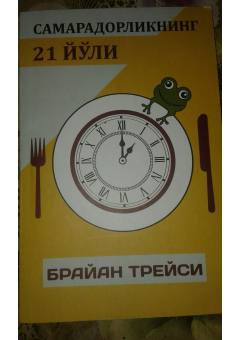

S2Vaqtni to'g'ri taqsimlab, samaradorlikni oshirishning 21 ta muhim qoidasi.
Ushbu kitob shaxsiy samaradorlikni oshirish va vaqtni to'g'ri taqsimlashning 21 ta samarali usulini o'rgatadi. Muallif o'z tajribasi va dunyo mutaxassislarining ilmiy-amaliy ishlanmalariga tayanib, kundalik vazifalarni bajarishda qanday qilib yuqori natijalarga erishish mumkinligini tushuntiradi.